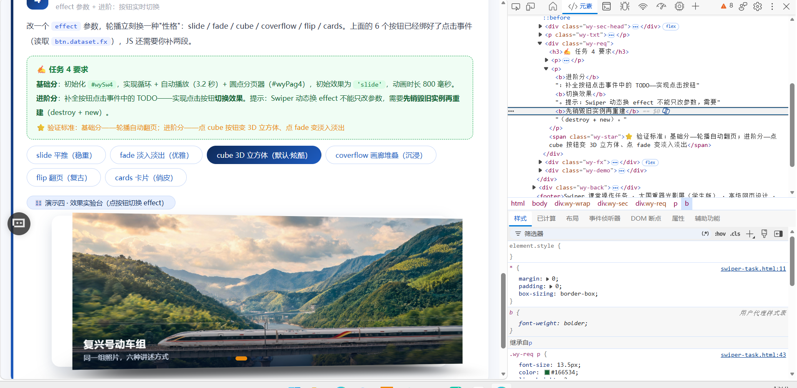

高级网页设计 · 2026-2027-1 · 课堂任务
课堂任务：提示词工程 · creative 仿写 · 综合创作
姓名：
学号：
班级：
答辩问答总表
三个任务的全部答辩问题与回答
| 任务 |
问题 |
回答 |
| 任务一 |
第一版提示词漏掉了哪个需求？ |
四条都写了，但第 ② 条只写了"手动操作后不停止"这个期望结果，没点破 Swiper 默认
disableOnInteraction: true；第 ④ 条只写"cube"，而页面任务卡原文是 slide，AI 直接照抄了任务卡。 |
| 任务一 |
第二轮是怎么"说清楚"的？ |
把形容词换成可验证条件：锁定 #wySw4 / #wyPag4 且声明不要改 DOM；
把"不停止"写成"拖动 / 点击分页之后仍然继续"；要求每条属性注释标明对应第几条；加自检问句。 |
| 任务一 |
AI 第一次给的代码错在哪？ |
effect: 'slide'（应为 cube）；autoplay 缺少
disableOnInteraction: false，拖动一次自动播放就永久停止。 |
| 任务二 |
transform 里的百分号是相对谁的？ |
相对 slide 自身的宽（X）和高（Y）。这些值最终写成 CSS 的
translate3d()，而 CSS 中 translate 百分比基准就是元素自身 border box；
Z 轴只能用 px，因为 translateZ 不接受百分比。 |
| 任务二 |
改一个数值让卡片转 20 度？ |
rotate 是 [X, Y, Z]，屏幕平面打转用第三位。
把 prev.rotate 从 [0,0,-10] 改为 [0,0,-20]（负值逆时针）。 |
| 任务二 |
prev / next 的 transform 各控制什么？ |
两者都只描述非激活状态：prev 是左边那张的离场姿态，
next 是右边那张排队时的站姿；真正动起来的是 Swiper 把两者插值到归零态
（translate:[0,0,0]、rotate:[0,0,0]、scale:1）。 |
| 任务三 |
这段代码什么意思？ |
keyboard.enabled 打开方向键翻页；onlyInViewport 限定只有轮播进入视口才响应；
它与 autoplay、effect 是并列配置项，互不覆盖。 |
| 任务三 |
AI 第一次哪里不对、改了什么？ |
图片首版在船体编造了错误船名 "Adara"（应为 Adora）与乱码字母；提示词追加
no text / no lettering / no logos 后重生成，展品名改由 HTML 文字渲染。 |
| 任务三 |
新参数的作用？ |
enabled：允许键盘翻页；onlyInViewport：避免页面里 4 个轮播被方向键同时驱动。 |
| 任务三 |
现场把 delay 改成指定值，预期怎么变？ |
当前 delay: 3200。改 1000：1 秒一张，快到看不清字幕；
改 8000：很慢，适合图文阅读；改 0：几乎不停顿 / 按默认行为处理；
负数无意义，会被当作无效值。 |
任务一 · 提示词工程师：让 AI 听懂需求
★★
考核点：需求拆解 → 提示词精确化 → AI 输出验证
本任务不写代码，写提示词。把下面需求"翻译"给 AI，让它生成
new Swiper('#wySw4', {…}) 配置：① 无缝循环 ② 3.2 秒自动翻页且手动操作后不停止
③ 圆点分页器可点击 ④ 初始效果为 cube。
硬性要求：至少迭代 2 轮提示词（第 1 轮 AI 答案大概率有遗漏或错误），保留每轮提示词与 AI 回答；
亲自粘进页面验证每项需求，用截图 + 一句话结论说明验证结果。
① 需求拆解（先把人话翻译成配置项）
| 需求 |
对应配置 |
| ① 无缝循环 |
loop: true |
| ② 3.2 秒自动翻页 + 手动后不停 |
autoplay: { delay: 3200, disableOnInteraction: false } |
| ③ 圆点分页器可点击 |
pagination: { el: '#wyPag4', clickable: true } |
| ④ 初始效果为 cube |
effect: 'cube' + cubeEffect |
② 第 1 轮提示词
你是一名前端工程师。请为页面 swiper-task.html 的演示四编写 Swiper 11 初始化配置，
容器 id 为 wySw4，分页器 id 为 wyPag4。要求：
1. 无缝循环；
2. 每 3.2 秒自动翻页，用户手动操作后不要停止；
3. 圆点分页器可点击跳转；
4. 初始效果为 cube。
只输出 js 代码，变量名 swiper4。
③ 第 1 轮 AI 的回答（有问题）
var swiper4 = new Swiper('#wySw4', {
loop: true,
autoplay: { delay: 3200 }, // ✗ 少了 disableOnInteraction
pagination: { el: '#wyPag4', clickable: true },
effect: 'slide' // ✗ 不是 cube
});
问题诊断：
1. 需求 ④ 没落地：AI 照抄了页面任务卡里的 "slide"，实际渲染出来是平推，看不见立方体。
2. 需求 ② 是"假通过"：Swiper 的 autoplay.disableOnInteraction 默认值是 true，
只写 delay 时，用户拖动一次自动播放就会被永久关掉。代码看起来对，一拖就停。
④ 第 2 轮提示词（把模糊描述改成可判定条件）
沿用上一版，修正两处并补三条约束：
1. 【已有 DOM 不要修改】容器固定为 #wySw4，分页器固定为 #wyPag4，选择器必须完全一致；
2. 自动播放：每 3.2 秒一张，并且用户拖动 / 点击分页之后仍然继续，不能被永久中断；
3. 初始效果：进入页面即为 3D 立方体（cube），不是平推 slide；
4. 每条属性后加中文注释，标明它对应第几条要求；
5. 输出前自检：手动拖一次后 3.2 秒是否还会自动翻？效果是不是立方体？
⑤ 第 2 轮 AI 的回答（最终采用）
var swiper4 = new Swiper('#wySw4', {
loop: true, // ① 无缝循环
autoplay: {
delay: 3200, // ② 每 3.2 秒翻一张
disableOnInteraction: false // ② 手动操作后自动播放继续
},
pagination: {
el: '#wyPag4',
clickable: true // ③ 圆点可点击
},
effect: 'cube', // ④ 初始 3D 立方体
cubeEffect: { shadow: true, slideShadows: true, shadowOffset: 20, shadowScale: .94 }
});
⑥ 粘贴进页面逐项验证
| 需求 |
验证方式 |
结论 |
| ① 无缝循环 |
翻到第 6 张后继续下一张 |
不停在最后一张，首尾相接 ✅ |
| ② 3.2 秒自动翻 |
不碰鼠标静置观察 |
约 3 秒翻一张 ✅ |
| ② 手动后不停 |
拖动一次后松手静置 |
约 3.2 秒后继续自动翻 ✅ |
| ③ 圆点可点击 |
点第 4 个圆点 |
直接跳到第 4 张 ✅ |
| ④ 初始 cube |
刷新页面看首屏 |
3D 立体翻转，非平推 ✅ |

⑦ 答辩回答
问：第一版提示词漏掉了哪个需求？
严格说四条都写了，但第 ② 条只写了"手动操作后不停止"这个期望结果，
没有点破 Swiper 的默认值 disableOnInteraction: true。AI 不知道这个默认值，
就会给出"加了 autoplay、一拖就停"的代码。第 ④ 条也只写了"初始效果 cube"，
而页面任务卡原文写的是 slide，AI 直接照抄了任务卡。
问：第二轮怎么"说清楚"的？
把形容词换成可验证的条件：① 明确列出已有 DOM 且"不要修改"，锁死两个 id；
② 把"不停止"写成"拖动 / 点击分页之后仍然继续"；③ 要求每条属性注释标明对应第几条需求，
逼 AI 自证不漏项；④ 加自检问句，把默认值陷阱变成输出前必须回答的是非题。
问：AI 第一次给的代码错在哪？
effect: 'slide'（应为 cube）和 autoplay 缺少
disableOnInteraction: false（拖动一次自动播放就永久停止）。
任务二 · creative 仿写：课堂没讲，AI 教你
★★★
考核点：AI 自学未讲 API + 官方示例阅读能力
课堂上只讲了 6 种 effect，Swiper 还有第 7 种 —— creative（自定义变换），本课未讲解。
请打开官方示例 swiper/demo/257-effect-creative.html，配合 AI 读懂
creativeEffect 的 transform 写法，为演示四新增第 7 个按钮「creative 电影墙」。
效果要求：上一张缩小左移并带角度、下一张放大右移进场（参数自定，但要"像电影选片墙"）。
① 读官方示例得到的结论
官方 5 个例子改的都是同一组键：translate（三维位移）、rotate（三维角度），
再加 opacity / scale / shadow。
类型定义见 swiper/types/modules/effect-creative.d.ts。
② 新增按钮
<button data-fx="creative">creative 电影墙（自定义变换）</button>
复用页面已有的 data-fx 机制，按钮点击事件一行都不用改。
③ 配置（电影选片墙）
creativeEffect: {
prev: { // 上一张：缩小、左移、带角度
translate: ['-58%', 0, -320], // 左移 58%，Z 后退 320px（越远越小）
rotate: [0, 0, -20], // 绕 Z 轴逆时针 20°
scale: 0.72,
opacity: 0.45,
shadow: true
},
next: { // 下一张：放大、从右侧推进
translate: ['78%', 0, 120], // 右移 78%，Z 前移 120px（越近越大）
rotate: [0, 0, 8],
scale: 1.06,
opacity: 0.85,
shadow: true
},
limitProgress: 1
}
④ 追问：prev / next 的 transform 各控制什么（自己的话）
prev 描述的是当前这张左边那张在非激活状态下的姿态 —— 它退到哪、退多远、歪多少度、还剩多大，
本质是"离场姿态"。
next 描述的是右边那张还没轮到它时的姿态 —— 不是进场动画，而是"排队时的站姿"。
真正动起来的是 Swiper：切换时它把这两个姿态按进度插值到归零态
（translate: [0,0,0]、rotate: [0,0,0]、scale: 1），
看起来才像"进场 / 离场"。
⑤ 答辩回答
问：transform 里的百分号是相对谁的？
相对 slide 自身的宽（X 轴）和高（Y 轴），不是视口、也不是外层容器。
因为这些值最终写成 CSS 的 transform: translate3d(...)，
CSS 中 translate 百分比的基准就是元素自身的 border box。
本页 slide 宽正好等于容器宽，所以看着像"相对容器"；一旦 slidesPerView: 3，同样写 78% 就只按三分之一宽算。
Z 轴只能用 px，因为 translateZ 不接受百分比。
问：改一个数值让卡片转 20 度？
rotate 是 [X, Y, Z]，屏幕上打转用第三位。把 prev.rotate 从
[0, 0, -10] 改成 [0, 0, -20] 即可（负值逆时针，正值顺时针）。
本页已改为 -20。
任务三 · 综合创作 + 技术答辩（超纲加分）
★★★
考核点：AI 协作完成超纲功能 + 技术表达
① 为光影展添加第六件展品爱达·魔都号（首艘国产大型邮轮，2024 年 1 月首航），
图片用 AI 生成（横版 16:9），slide 结构完整；
② 挑一个课堂上没讲过的 Swiper 能力加上去：keyboard 键盘控制 / mousewheel 滚轮 /
zoom 双击缩放 / parallax 视差，任选其一。
① 第六件展品：爱达·魔都号
图片由 AI 生成（2560×1440，16:9 横版），四个演示各新增一张 slide，
结构与前五件完全一致：img + .wy-cap（h3 名称 + p 一句说明）。
分页圆点由 5 个自动变为 6 个，未手改 DOM。
② 新增能力：keyboard 键盘控制
keyboard: {
enabled: true, // 开启方向键翻页
onlyInViewport: true // 只有轮播进入视口才响应
}
选择它的原因：不需要额外插件（swiper-bundle 内置）、不改任何 DOM、
与现有 3.2 秒 autoplay 不冲突。不选另外三个：mousewheel 会抢页面滚动，
zoom 与 cube / creative 叠加容易错位，parallax 需要改 slide 内部结构。
③ AI 关键往返（摘要）
| 轮次 |
问题 → 修正 |
| 图片生成 |
首版船体出现编造船名 "Adara"（应为 Adora）与乱码字母 → 提示词追加
no text / no lettering / no logos，第二版船体干净，展品名交给 HTML 文字 |
| keyboard 参数 |
只写 enabled: true 会让页面 4 个轮播同时响应方向键 → 补
onlyInViewport: true |
| delay 陷阱 |
disableOnInteraction 默认 true → 必须显式写 false |
以上三轮往返的提示词与 AI 回答已整理在上表，答辩时按表逐条说明即可。
④ 答辩四连问
| 问题 |
回答 |
| 这段代码什么意思？ |
keyboard.enabled 打开方向键翻页；onlyInViewport 限定只有轮播进入视口才响应；
它与 autoplay、effect 是并列配置项，互不覆盖。 |
| AI 第一次哪里不对、改了什么？ |
图片首版在船体编造错误船名与乱码字母，改为加负向约束重生成；展品名改由 HTML 渲染。 |
| 新参数的作用？ |
enabled：允许键盘翻页；onlyInViewport：避免页面多个轮播被键盘同时驱动。 |
| 现场改 delay 并说预期 |
当前 delay: 3200。改 1000：1 秒一张，快到来不及看字；
改 8000：很慢，适合图文阅读；改 0：几乎不停顿 / 按默认行为处理。 |